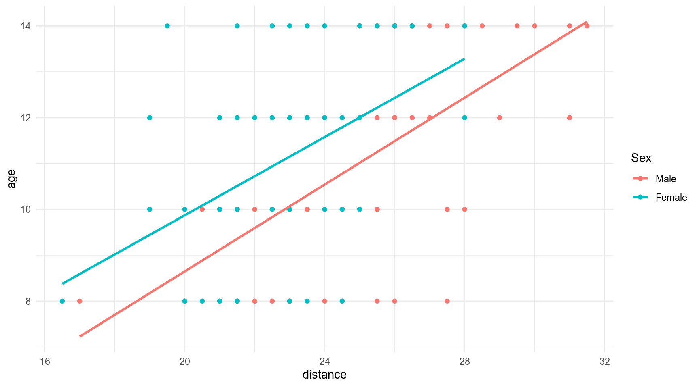
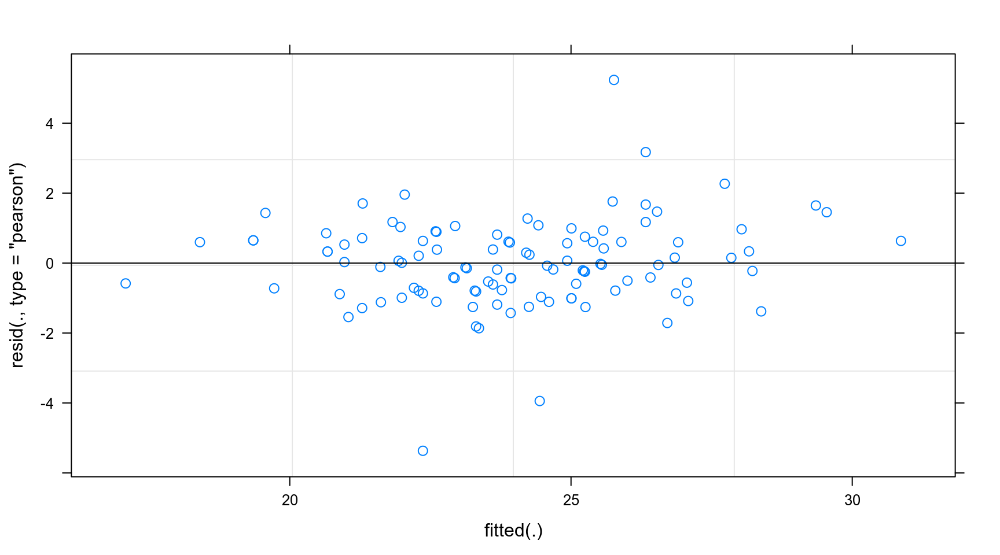
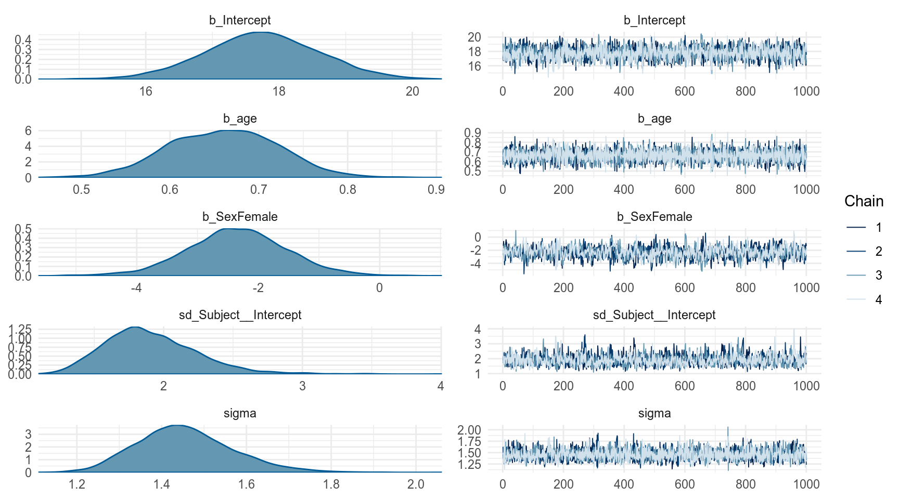
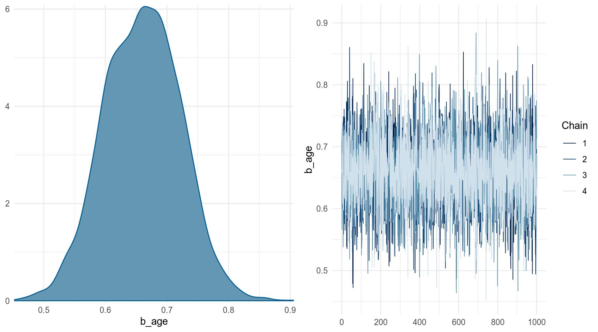
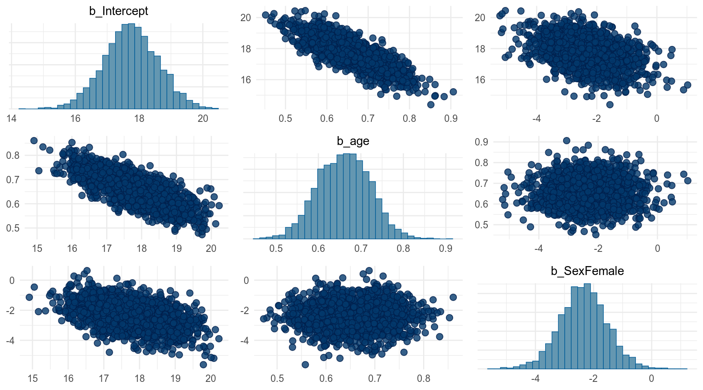
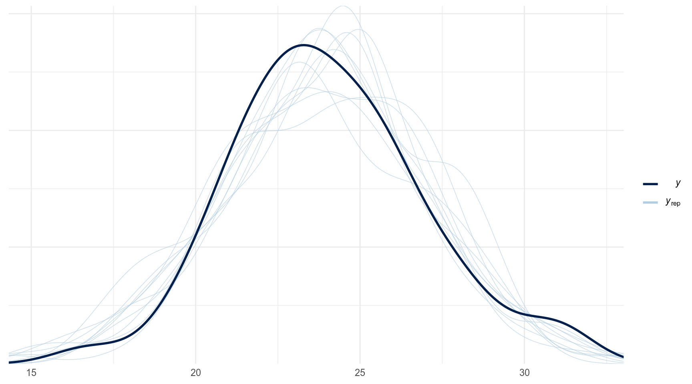

The Orthodont data frame has 108 rows and 4 columns of the change in an orthdontic measurement over time for several young subjects.
orth %>%
ggplot(aes(distance, age, color = Sex))+
geom_point()+
geom_smooth(method = 'lm', se = FALSE)
n_cores <- 7 # parallel::detectCores() - 1
fit_lmer <- lmer(distance ~ age + Sex + (1|Subject), data = orth)
summary(fit_lmer)Linear mixed model fit by REML ['lmerMod']
Formula: distance ~ age + Sex + (1 | Subject)
Data: orth
REML criterion at convergence: 437.5
Scaled residuals:
Min 1Q Median 3Q Max
-3.7489 -0.5503 -0.0252 0.4534 3.6575
Random effects:
Groups Name Variance Std.Dev.
Subject (Intercept) 3.267 1.807
Residual 2.049 1.432
Number of obs: 108, groups: Subject, 27
Fixed effects:
Estimate Std. Error t value
(Intercept) 17.70671 0.83392 21.233
age 0.66019 0.06161 10.716
SexFemale -2.32102 0.76142 -3.048
Correlation of Fixed Effects:
(Intr) age
age -0.813
SexFemale -0.372 0.000
fit_brms <- brm(distance ~ age + Sex + (1|Subject), data = orth,
cores = n_cores, refresh = 0, silent = T)
summary(fit_brms) Family: gaussian
Links: mu = identity; sigma = identity
Formula: distance ~ age + Sex + (1 | Subject)
Data: orth (Number of observations: 108)
Samples: 4 chains, each with iter = 2000; warmup = 1000; thin = 1;
total post-warmup samples = 4000
Group-Level Effects:
~Subject (Number of levels: 27)
Estimate Est.Error l-95% CI u-95% CI Eff.Sample Rhat
sd(Intercept) 1.91 0.34 1.37 2.66 1205 1.00
Population-Level Effects:
Estimate Est.Error l-95% CI u-95% CI Eff.Sample Rhat
Intercept 17.75 0.86 16.05 19.43 1708 1.00
age 0.66 0.06 0.54 0.78 5958 1.00
SexFemale -2.35 0.83 -4.02 -0.69 875 1.00
Family Specific Parameters:
Estimate Est.Error l-95% CI u-95% CI Eff.Sample Rhat
sigma 1.46 0.11 1.26 1.70 3493 1.00
Samples were drawn using sampling(NUTS). For each parameter, Eff.Sample
is a crude measure of effective sample size, and Rhat is the potential
scale reduction factor on split chains (at convergence, Rhat = 1).
Можно выбрать какой-то один параметр:


По хорошему наш фит должен был выглядеть вот так, но brm() многое сделал за нас:
fit_brms <- brm(distance ~ age + Sex + (1|Subject), data = orth,
family = gaussian(),
prior = prior_list, # этот список еще и надо задать!
cores = n_cores, refresh = 0, silent = T)А какие прайоры он сделал для нашей модели?
Если модель не сошлась, то можно:
iter = 5000control = list(adapt_delta = .99) 1
33.3146 Estimate Est.Error Q2.5 Q97.5
[1,] 33.29953 1.714516 29.88391 36.70855pp_checkThe idea behind posterior predictive checking is simple: if a model is a good fit then we should be able to use it to generate data that looks a lot like the data we observed.

Сравним модели:
fit_brms1 <- brm(distance ~ age + Sex + (1|Subject), data = orth,
cores = n_cores, refresh = 0, silent = T,
save_all_pars = TRUE)
fit_brms2 <- brm(distance ~ age + (1|Subject), data = orth,
cores = n_cores, refresh = 0, silent = T,
save_all_pars = TRUE)
bayes_factor(fit_brms1, fit_brms2)Iteration: 1
Iteration: 2
Iteration: 3
Iteration: 4
Iteration: 5
Iteration: 6
Iteration: 7
Iteration: 1
Iteration: 2
Iteration: 3
Iteration: 4Estimated Bayes factor in favor of bridge1 over bridge2: 107.73152